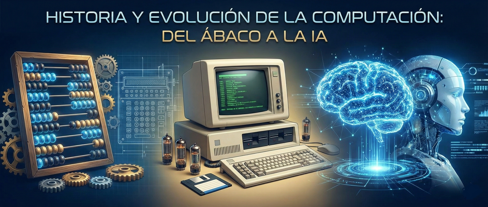

Bienvenidos a la Era Digital
El objetivo de esta página web es presentar el recorrido histórico de las Tecnologías de la Información y Comunicación (TIC). Desde los primeros intentos del ser humano por automatizar el cálculo hasta las redes neuronales que hoy impulsan la Inteligencia Artificial.
Video Resumen: Historia de la Computación
¿El video no carga?
▶ Ver en YouTubeLa Prehistoria del Computador (Gen 0)
Antes de la electricidad, existieron máquinas mecánicas fascinantes que sentaron las bases lógicas.
Las 5 Generaciones del Computador
Evolución marcada por el cambio de componente electrónico.

1ª Generación
Hardware: Tubos de vacío. Enormes y calientes.
Software: Lenguaje Máquina.
Ejemplo: ENIAC.
Impulsada por la Segunda Guerra Mundial (necesidad de cálculos balísticos). Su precursor fueron las grandes calculadoras electromecánicas de relés.
2ª Generación
Hardware: Transistores. Más pequeñas y rápidas.
Software: Alto Nivel (COBOL).
Precursor: Invención del transistor (Bell Labs, 1947).
Influencia: La Guerra Fría y la Carrera Espacial exigían equipos más ligeros.
3ª Generación
Hardware: Circuitos Integrados (Chips).
Software: Sistemas Operativos.
Precursor: La idea de Jack Kilby de integrar componentes en una sola placa.
Influencia: Automatización de negocios y reducción de costos.
4ª Generación
Hardware: Microprocesador (CPU en un chip).
Revolución: Nace la PC personal.
Precursor: Tecnología VLSI (Alta escala de integración).
Influencia: La demanda de informática personal y doméstica (Apple, IBM).
Tendencias Actuales e Inteligencia Artificial
El Futuro es Ahora
A continuación, presentamos las anotaciones clave sobre lo que mueve el mundo informático hoy:
Desplazamiento del almacenamiento local a servidores en internet (Google Drive, AWS).
Análisis de volúmenes de datos tan grandes que los humanos no pueden procesar sin algoritmos.
El campo crítico de proteger la infraestructura digital ante ataques globales.
🤖 Inteligencia Artificial (IA)
Sistemas que simulan la cognición humana. Desde el reconocimiento facial hasta IAs generativas.
Equipo de Desarrollo
Estudiantes de la Cátedra Fundamentos de la Informática - Sección 02
Sergio Garcia
Caleb Hernandez
Kevin Gonzalez
Sebastian Hernandez